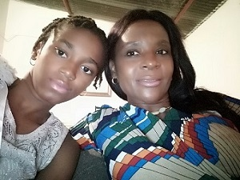
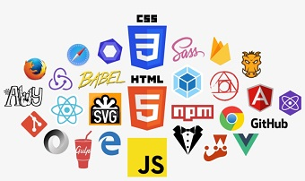

O Engenheiro Patrício Luis, comumente chamado de Patrício, é um jovem estudante da Universidade Independente de Angola - UnIA cursando Engenharia Informatica, frequentando o 2º ano.
OBS: Caso deseja obter mais informações sobre a Universidade Independente de Angola, clique no link acima☝ para visitar o site oficial da Universidade e ver os cursos disponíveis
Um Jovem sonhador e com imenso vontade de vencer na vida. Apesar das dificuldades e perdas que tem enfrentado, mantém a cabeça erguida e continua em frente, lutando pelos seus sonhos.
Patrício considera seus parentes como uma das prioridades em sua vida, nota-se isso pela forma que ela cuida e preocupa com eles. Como vê na foto a baixo, sua mãe e irmã.
No mundo da cinematologia, o Eng. Patrício tem imensa paixão com as Editoras de Midia Norte-Americana: Marvel e a DC. Clique nas imagens ou nas palavras para ser redirecionado nos seus respectivos sites oficiais.
Uma Outra paixão do Eng. Patrício e um sonho também, é a programação web, especificamente na área de Front-End (Desenvolvimento páginas Web), pelo qual ele tem se esforçado imenso para alcançar.
E por último, o Eng. Patrício ama o seu club do coração, o FC Barcelona. Club este que ele apoia a 100%, independentemente da fase em que o club esteja a passar. Clique no link ou na imagem e será redirecionado ao site ofocial do FC BARCELONA.
Continue sendo quem você é. Se for para mudar que seja para melhorar. Nunca se compare com ninguém, isso só causa desânimo! Mas continue se comparando com você mesmo, continue lutando com você mesmo, vença você mesmo e que o seu objectivo a cada dia sejá ser melhor do que foste um dia antes.💪
Para mais informações ou desejar entrar em contacto com ele, clique no ícone do facebook abaixo👇 e serás redirecionado à sua página oficial do facebook.